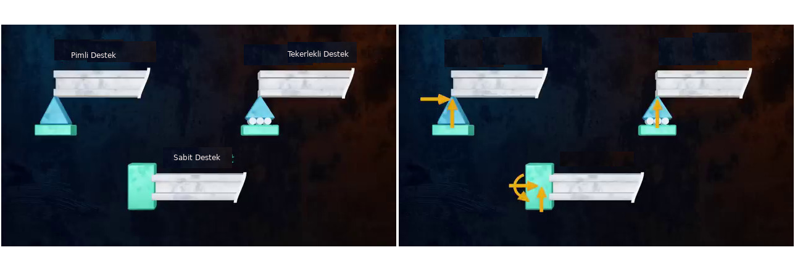
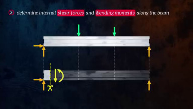

Materyel Mekaniği - 1 - Problemler
Altta kiriş odaklı bazı örnek problemleri çözeceğiz. Bir kirişe yük uygulandığında dengenin muhafaza edilmesi için kiriş içinde kuvvetler oluşur. Bu iç kuvvetler kirişin destek yapısına göre farklı şekillerde ortaya çıkabilir [1].

Üstteki soldaki resimde mesela iki boyutta pimli destek dönüşe izin verir, tekerlekli yatay sağ, sol hareketi ve dönüşü serbest bırakır. Sabit destekte hiç harekete izin yoktur. Hangi harekete izin verilmediğine göre yük uygulanması ardından üst sağdaki iç kuvvetler ortaya çıkacaktır, bunlar pimli durumda dikey ve yatay kuvvetler, tekerlekli durumda dikey kuvvet, sabit durumda ise her üç mümkün tepkilerdir, yani moment, dikey ve yatay.
Yükler noktasal ya da dağıtık şekilde uygulanabilir, altta noktasal kuvvet, dağıtık kuvvet ve noktasal moment örneklerini görüyoruz.

Tipik olarak problemin beklediği kesim kuvveti ve bükülme momenti grafikleridir, bu grafiklerde $x$ ekseni yatay olarak kirişın kendisi, $y$ ekseni ise o noktada etki eden kesim ya da moment büyüklüğüdür.
Çözme yöntemi olarak iki yaklaşım mevcut, biri her kritik noktada kirişin hissettiği içsel kuvvetler ve momentleri hesaplamak için o noktalarda denge denklemlerini kullanmak, ki bu denklemlere (ve temel fiziğe göre) kirişe uyguladığımız hayali bir kesitte etki eden tüm kuvvetler ve momentler birbirini dengelemeli. Ardından bu kesit tüm kiriş boyunca kaydırılır ve gereken kuvvetler aynı denge üzerinden hesaplanır. Eğer tüm yükler noktasal ise bu yaklaşım iyi işler.

Bir diğer yaklaşım Calculus kullanmak. Bu yaklaşım temelde sürekli bazda çözüm verdiği için dağıtık yük durumunda daha kolay işler, kritik noktalara odaklanmak yerine pür formulsel düşünebiliriz . Daha önce görmüştük ki kesim kuvvet formülünün eğimi (türevi) o noktadaki uygulanan yükün negatifidir $\mathrm{d} V / \mathrm{d} x = -w$, ve bükülme moment grafiğinin eğimi ise o noktadaki kesim kuvvetine eşittir, $\mathrm{d} M / \mathrm{d} x = V$.
Problem 1
[devam edecek]
Kaynaklar
[1] The Efficient Engineer, Understanding Shear Force and Bending Moment Diagrams, https://youtu.be/C-FEVzI8oe8
[2] Gere, Mechanics of Materials
Yukarı